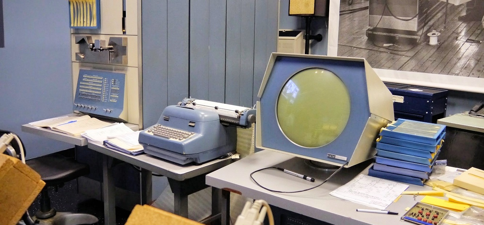
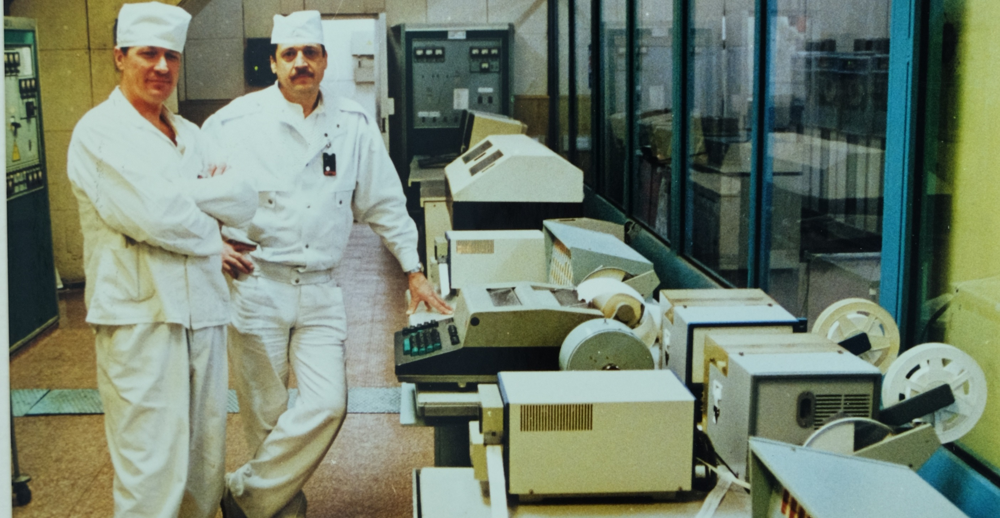

Inicio...
Os computadores da segunda geração começaram a se espalhar no uso comercial, tornando-se possíveis de encontrar em diversos setores, desde universidades até usinas nucleares, com isso causaram um impacto enorme tanto na sociedade quantono mundo.

O PDP-1, lançado em 1959, que foi amplamente utilizado por órgãos governamentais, grandes empresas e
instituições acadêmicas, como o Instituto de Tecnologia de Massachusetts (MIT). O PDP-1 ficou conhecido por ser o hardware que originou
os jogos Spacewar! e Rato-no-labirinto. Além disso, acompanhava uma caneta óptica, um joystick e um mecanismo de entrada baseado nas
máquinas de escrever elétricas da IBM.
Também contribuiu para o desenvolvimento dos primeiros editores de texto, como o TECO, uma vez que o manuseio de fitas de papel já começava a se
tornar um problema. Além disso, foi em um PDP-1 que se desenvolveu o software da ARPANET, a rede de computadores utilizada para a transmissão
de dados militares, destacando ainda mais sua relevância para a época

o IBM 1401, um dos primeiros computadores comerciais voltados para empresas. Ele foi projetado como uma porta de entrada acessível para o setor corporativo, sendo amplamente utilizado para tarefas como contabilidade e gestão de estoques. Seu grande diferencial era a facilidade de programação.
Além do uso comercial e acadêmico, os computadores da segunda geração também foram desenvolvidos para atuar como mecanismos de controle em usinas nucleares. Um exemplo notável é o sistema SKALA, utilizado para gerenciar a usina de Chernobyl.

O IBM 7030, foi primeiro supercomputador transistorizado da IBM foi desenvolvido para o Oak Ridge National Laboratory, com foco em pesquisa em energia nuclear. Projetado para ser extremamente rápido, o objetivo era acelerar cálculos complexos necessários para estudos científicos avançados. No entanto, apesar de sua inovação com transistores, o desempenho ficou abaixo das expectativas. Esse computador destacou tanto os avanços tecnológicos da época quanto as limitações enfrentadas nos primeiros projetos de supercomputadores, evidenciando desafios no desenvolvimento de sistemas de alto desempenho.

O IBM 1410, foi um computador transistorizado utilizado pela NASA para suporte administrativo e logístico nas primeiras missões espaciais. Embora não fosse projetado para cálculos científicos complexos, o 1410 desempenhou um papel crucial no gerenciamento do Programa Apollo, auxiliando na organização e controle das operações relacionadas às missões espaciais. Esse modelo representou uma aplicação significativa de computadores na exploração espacial, focando em tarefas de apoio e gerenciamento.